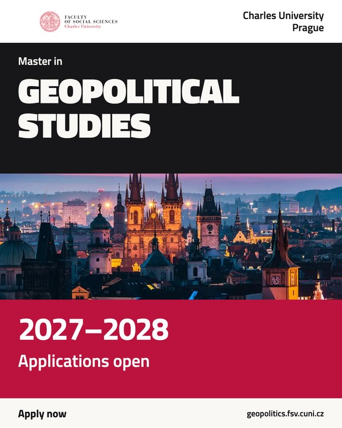
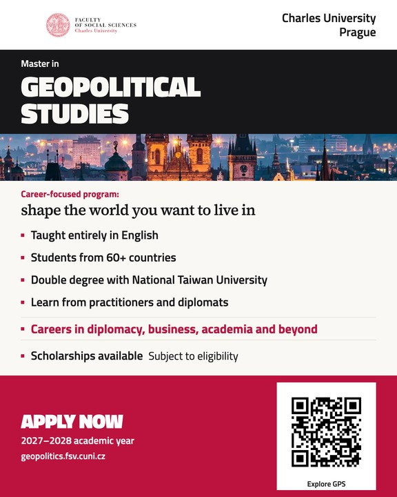

Simple announcement
1440 × 1800
Two new designs for the 2027–2028 campaign: a simple applications announcement and an informative programme flyer.
Design review · Launch copy for 1 November 2026
Compare all four design directions →


“Apply now”, the new career-focused tagline, and “Careers in diplomacy, business, academia and beyond” are included. Original institutional branding and real Prague photography are retained in the new layouts.
Feed and Stories have separate compositions. Stories keep meaningful content inside Meta’s recommended safe area. The optional QR leads to the GPS homepage; the clickable ad destination should use the same URL.
Artwork prepared for review before the planned 1 November 2026 campaign launch.